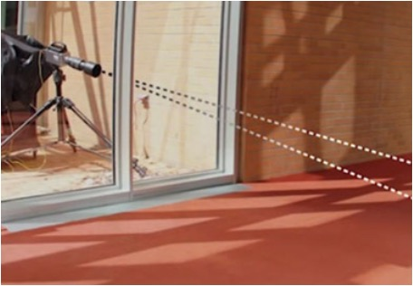
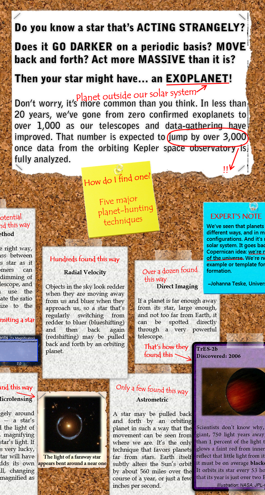

{kind=link}
I sometimes do things!
Here's a sortable selection of my writing clips - as you can see, along with programming in Python I know how to do things in HTML and JavaScript. The grid layout of different sized blocks is from the Masonry library, if you were wondering.
Thanks for visiting!
IEEE Spectrum

LEDs Bring New Light to Car-to-Car Comm
Signals transmitted by LEDs will help vehicles cooperate and avoid crashesIEEE Spectrum
Your Candy Wrappers are Listening
Visual microphone reconstructs nearby sound from silent videos of ordinary objects.IEEE Spectrum
How to Catch a Memory Copycat
In the competitive world of memory chip manufacture, how do you find a fraud?Scienceline

The Ultimate Environmental Challenge
If you want people to conserve, you’re going to have to convince…me.IEEE Spectrum
Holographic Displays Come to Smartphones
Light-field displays for mobile devices might be only a year away.IEEE Spectrum
WiFi-Honk Gets Pedestrians out of the Way
App would use beacons sent over Wi-Fi to warn of collisions.IEEE Spectrum

Google's Cardboard Virtual Reality Kit
Google debuts minimalist virtual reality and lets you build your own from a pizza box.Scienceline

Thinking machines?
A Turing test doesn't measure a computer's intelligence, but it does say something about its usefulness.Scienceline

Written in the clouds
Cargo ships and weather balloons - no one said MAGIC was easy.The Scientist

A face to remember
MIT group's 'feature tuning' algorithm can make your profile more (or less) memorable.Scienceline (video)
Close up: Fly's Eye Photography
Artist M. Henry Jones turns lenses and lighting into 3D portraits that really pop. With Joshua A. KrischScienceline (infographic)
Planet-hunter's guide to the galaxy
Scienceline

Science and art collide in space images
What are we really seeing when we look at photos of planets and stars?Scienceline

Florida's extraordinary mangroves
'Walking trees' guard the shores of Florida and thrive in the salty water.Scienceline
Expecting the unexpected in space
NASA has a long history of repurposing old missions that finish or go awry and ending up with great science.Scienceline

Our sleeping sun
Scientists wonder what's in store as sun activity lingers at lowest in over a century.Scienceline

Will Comet ISON survive?
Tiny ice ball meets giant fireball.
Scienceline

A light touch
New twist on microscopic technique lets users feel the forces pressing in on particles.Vector (Boston Children's Hospital)
From discovery to trial
A drug that may correct 'lazy eye.'
Vector (Boston Children's Hospital)

A secret in the plasma
Strengthening newborns' immune systems.
Vector (Boston Children's Hospital)
Finding the best stem cell for the job
Although stem cells have the potential to differentiate into any type, they often prefer a particular route.Vector (Boston Children's Hospital)
Decoding kidney disease
Over one third of chronic kidney diseases are caused by single mutations on single genes.Vector (Boston Children's Hospital)

A mutation and a mystery
In mice, weight gain without a change in energy use.
Inside NOVA
Encryptions Past, Present, and Future
Four-part series on cryptography.(WGBH's NOVA blog lost to time and space; here's a PDF)
Inside NOVA
Adventures in swarm robotics
Harvard's thousand-robot army is almost complete.(WGBH's NOVA blog lost to time and space; here's a PDF)
Brown Daily Herald
Brain patterns of passion revealed
Love may be in the air, but it is also in your brainwaves.
Johns Hopkins Medicine Magazine

Baby dino yields big clues
Scientists look to antiquity for insight into modern human anatomy.All hail the bird captain!
The bird captain knows all.